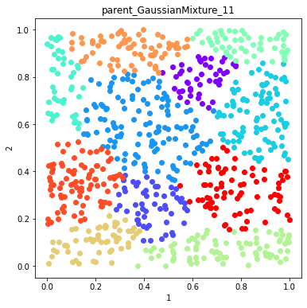
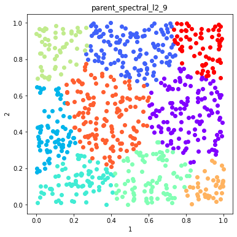
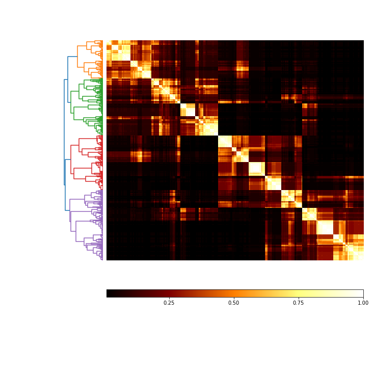

Build an ensemble using algorithms and distances, finish to see if it uncovers the lack of structure¶
[1]:
import numpy as np
import pandas as pd
import openensembles as oe
import matplotlib.pyplot as plt
n_samples = 800
np.random.seed(0) #this helps to establish the same dataset and functionality, but is not required
no_structure = np.random.rand(n_samples, 2), None
X,y = no_structure
df = pd.DataFrame(X)
d = oe.data(df, [1,2])
plt_data = d.plot_data('parent')

Create an ensemble¶
[2]:
c = oe.cluster(d) #instantiate an object so we can get all available algorithms
a = c.algorithms_available()
paramsC = c.clustering_algorithm_parameters() #here we will rely on walking through
# remove DBSCAN -- this does very well on unstructured data, we want to ask if we can use poorly performing algorithms
# to identify if there isn't structure.
algorithmsToRemove = ['DBSCAN']
for algToRemove in algorithmsToRemove:
del a[algToRemove]
takesLinkages = paramsC['linkage']
takesDistances = paramsC['distance']
takesK = paramsC['K']
[3]:
#setup the parameters of clustering here, algorithms are set by algorithms_available
K = range(3, 20, 2)
linkages = ['average', 'complete', 'ward']
distances = ['euclidean', 'l1', 'l2']
[4]:
# Create an ensemble: sweep K, distance metrics
c = oe.cluster(d)
for data_source in d.D.keys(): #if there were transformations in d.D
for algorithm in list(a.keys()): #linkage is only for agglomerative, which also accepts K and distances, so handle that here
if algorithm in takesK:
for k in K:
if algorithm in takesDistances:
if algorithm in takesLinkages:
for linkage in linkages:
if linkage == 'ward':
out_name = '_'.join([data_source, algorithm, linkage, str(k)])
c.cluster(data_source, algorithm, out_name, K=k, Require_Unique= True, linkage=linkage)
else:
for dist in distances:
out_name = '_'.join([data_source, algorithm, dist, linkage, str(k)])
c.cluster(data_source, algorithm, out_name, K=k, Require_Unique= True, linkage=linkage, distance=dist)
else:
for dist in distances:
out_name = '_'.join([data_source, algorithm, dist, str(k)])
c.cluster(data_source, algorithm, out_name, K=k, Require_Unique= True, distance=dist)
else:
out_name = '_'.join([data_source, algorithm, str(k)])
c.cluster(data_source, algorithm, out_name, K=k, Require_Unique= True)
else: # does not take K
if algorithm in takesDistances:
for dist in distances:
out_name = '_'.join([data_source, algorithm, dist])
c.cluster(data_source, algorithm, out_name, Require_Unique= True, distance=dist)
else:
out_name = '_'.join([data_source, algorithm])
c.cluster(data_source, algorithm, out_name, Require_Unique= True)
Plot example solutions from the ensemble¶
[5]:
#plot some random number of solutions
names = c.labels.keys()
figs =[]
fig = 0
numSolutions = 6
#namesToSelect = random.sample(names, numSolutions)
namesToSelect = np.random.choice(list(names), numSolutions, replace=False)
for name in namesToSelect:
d.plot_data('parent', fig_num=fig, class_labels=c.labels[name], title=name)
fig+=1






Finish the ensemble using Majority Vote and Graph Closure¶
[6]:
#View the ensembles
coMat = c.co_occurrence_matrix()
fig = coMat.plot(add_labels=False)

Graph Closure and Majority Vote Finishing¶
[7]:
# Explore effects of threshold on graph closure
thresholds = [0.5, 0.6, 0.7]
fig = 0
c_graph_dict = {}
c_majority_vote_dict = {}
for threshold in thresholds:
c_graph = c.finish_graph_closure(threshold=threshold)
c_graph_dict[str(threshold)] = c_graph
c_majority_vote = c.finish_majority_vote(threshold=threshold)
c_majority_vote_dict[str(threshold)] = c_majority_vote
[8]:
# Plot the solutions of Graph Closure
fig = 0
for threshold in c_graph_dict:
labels = c_graph_dict[threshold].labels['graph_closure']
d.plot_data('parent', fig_num = fig, class_labels=labels, title='Graph Closure threshold=%s'%(threshold))
fig+=1
[9]:
# Plot the solutions of Majority Vote
fig = 0
figs =[]
for threshold in c_majority_vote_dict:
labels = c_majority_vote_dict[threshold].labels['majority_vote']
d.plot_data('parent', fig_num = fig, class_labels=labels, title='Majority Vote threshold=%s'%(threshold))
fig+=1


Use mutual information to compare solutions¶
[10]:
mi_adjusted = c.MI(MI_type='adjusted')
[11]:
mi_adjusted.matrix
[11]:
| parent_AffinityPropagation_euclidean | parent_AffinityPropagation_l1 | parent_AffinityPropagation_l2 | parent_Birch_3 | parent_Birch_5 | parent_Birch_7 | parent_Birch_9 | parent_Birch_11 | parent_Birch_13 | parent_Birch_15 | ... | parent_spectral_l2_13 | parent_spectral_euclidean_15 | parent_spectral_l1_15 | parent_spectral_l2_15 | parent_spectral_euclidean_17 | parent_spectral_l1_17 | parent_spectral_l2_17 | parent_spectral_euclidean_19 | parent_spectral_l1_19 | parent_spectral_l2_19 | |
|---|---|---|---|---|---|---|---|---|---|---|---|---|---|---|---|---|---|---|---|---|---|
| parent_AffinityPropagation_euclidean | 1.0 | 0.969941 | 1.0 | 0.53533 | 0.588711 | 0.598626 | 0.565102 | 0.539072 | 0.536421 | 0.51596 | ... | 0.552151 | 0.537204 | 0.520182 | 0.534409 | 0.509064 | 0.511144 | 0.512794 | 0.491146 | 0.481378 | 0.494583 |
| parent_AffinityPropagation_l1 | 0.969941 | 1.0 | 0.969941 | 0.535193 | 0.589659 | 0.597436 | 0.563175 | 0.537255 | 0.535212 | 0.514802 | ... | 0.553737 | 0.544558 | 0.518381 | 0.541775 | 0.509783 | 0.513119 | 0.513668 | 0.49179 | 0.481861 | 0.495228 |
| parent_AffinityPropagation_l2 | 1.0 | 0.969941 | 1.0 | 0.53533 | 0.588711 | 0.598626 | 0.565102 | 0.539072 | 0.536421 | 0.51596 | ... | 0.552151 | 0.537204 | 0.520182 | 0.534409 | 0.509064 | 0.511144 | 0.512794 | 0.491146 | 0.481378 | 0.494583 |
| parent_Birch_3 | 0.53533 | 0.535193 | 0.53533 | 1.0 | 0.797995 | 0.710356 | 0.652631 | 0.613799 | 0.584213 | 0.559569 | ... | 0.418875 | 0.449921 | 0.426089 | 0.451691 | 0.457276 | 0.428064 | 0.448247 | 0.425964 | 0.430374 | 0.41837 |
| parent_Birch_5 | 0.588711 | 0.589659 | 0.588711 | 0.797995 | 1.0 | 0.90691 | 0.843608 | 0.800095 | 0.766409 | 0.737979 | ... | 0.541362 | 0.592401 | 0.559478 | 0.592515 | 0.566349 | 0.541955 | 0.574147 | 0.551822 | 0.535815 | 0.551853 |
| ... | ... | ... | ... | ... | ... | ... | ... | ... | ... | ... | ... | ... | ... | ... | ... | ... | ... | ... | ... | ... | ... |
| parent_spectral_l1_17 | 0.511144 | 0.513119 | 0.511144 | 0.428064 | 0.541955 | 0.612765 | 0.657557 | 0.66832 | 0.674726 | 0.705532 | ... | 0.75896 | 0.775011 | 0.793162 | 0.774445 | 0.761963 | 1.0 | 0.776813 | 0.752915 | 0.748487 | 0.75456 |
| parent_spectral_l2_17 | 0.512794 | 0.513668 | 0.512794 | 0.448247 | 0.574147 | 0.640012 | 0.67637 | 0.68908 | 0.690357 | 0.712109 | ... | 0.752843 | 0.821791 | 0.79629 | 0.820391 | 0.902564 | 0.776813 | 1.0 | 0.793866 | 0.724944 | 0.810557 |
| parent_spectral_euclidean_19 | 0.491146 | 0.49179 | 0.491146 | 0.425964 | 0.551822 | 0.622116 | 0.659149 | 0.666747 | 0.671274 | 0.688036 | ... | 0.719309 | 0.769043 | 0.741931 | 0.770196 | 0.798569 | 0.752915 | 0.793866 | 1.0 | 0.76557 | 0.935674 |
| parent_spectral_l1_19 | 0.481378 | 0.481861 | 0.481378 | 0.430374 | 0.535815 | 0.596919 | 0.640646 | 0.653699 | 0.659841 | 0.676507 | ... | 0.69741 | 0.715167 | 0.6999 | 0.716911 | 0.75862 | 0.748487 | 0.724944 | 0.76557 | 1.0 | 0.762221 |
| parent_spectral_l2_19 | 0.494583 | 0.495228 | 0.494583 | 0.41837 | 0.551853 | 0.620496 | 0.659171 | 0.673963 | 0.679704 | 0.696205 | ... | 0.726722 | 0.776894 | 0.737667 | 0.778176 | 0.808413 | 0.75456 | 0.810557 | 0.935674 | 0.762221 | 1.0 |
124 rows × 124 columns
[12]:
mi_plot = mi_adjusted.plot()
[13]:
#plot MI with type of algorithm as label
label_vec = []
for index, row in mi_adjusted.matrix.iterrows():
name = c.algorithms[index]
label_vec.append(name)
[14]:
mi_plot = mi_adjusted.plot(threshold= 0, label_vec=label_vec)
[ ]: